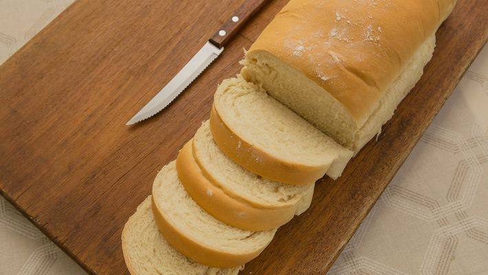

Pão caseiro

Ingredientes
- 1kg de farinha de trigo(aproximadamente)
- 1 e 1/2 xícara de leite morno(aprox. 400ml)
- 1/2 xícara de água morna
- 1/2 xícara de óleo(aprox. 100ml)
- 4 colheres(sopa) de açúcar(aprox. 200g)
- 1 colher(sopa) de sal
- 2 ovos
- 30g de fermento biológico fresco
Modo de Preparo
-
Em uma tigela, dissolva o fermento fresco (ou 10 g de fermento seco) no
açúcar e acrescente o sal, os ingredientes líquidos, os ovos e misture
muito bem.
-
Acrescente aos poucos a farinha até formar uma massa macia e sove bem a
massa.
- Deixe a massa descansar por aproximadamente 1 hora.
-
Após o crescimento, divida a massa, enrole da forma que desejar, coloque
nas formas e deixe crescer até dobrar de volume.
-
Leve para assar em forno médio (200° C), preaquecido, por
aproximadamente 30 minutos.
-
Retire o pão do forno e pincele leite para a casca ficar mais macia.